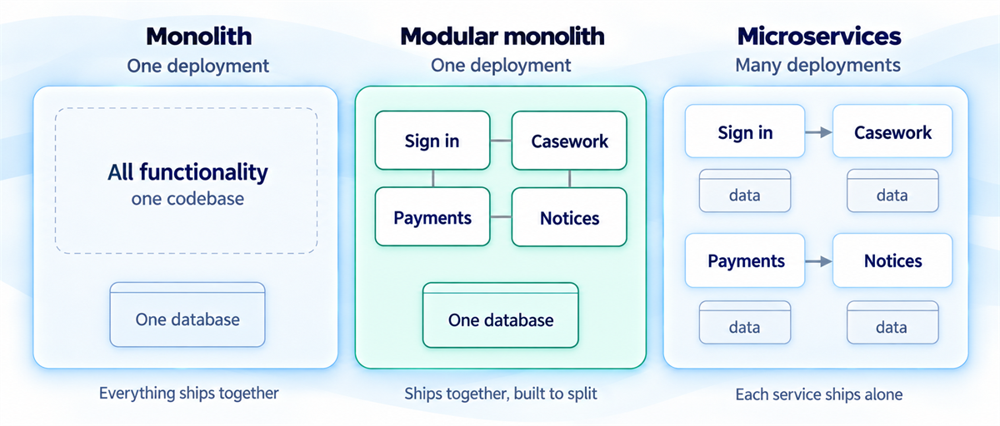
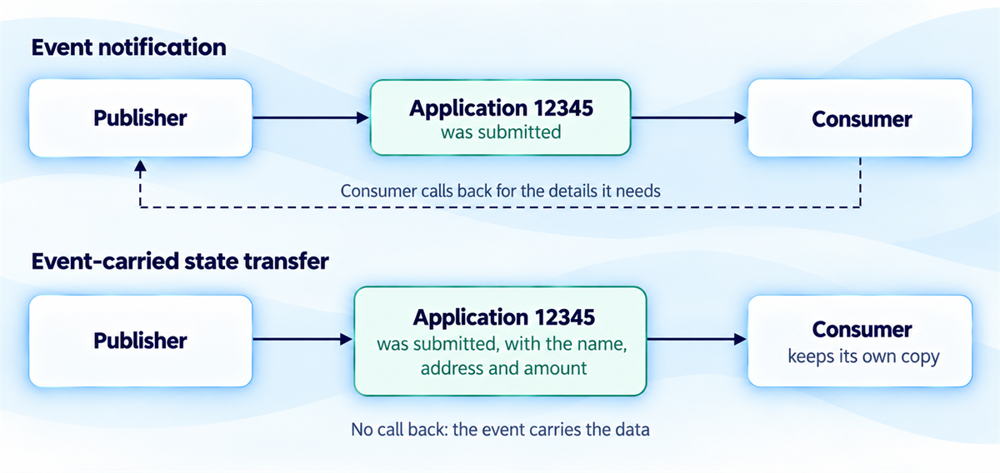
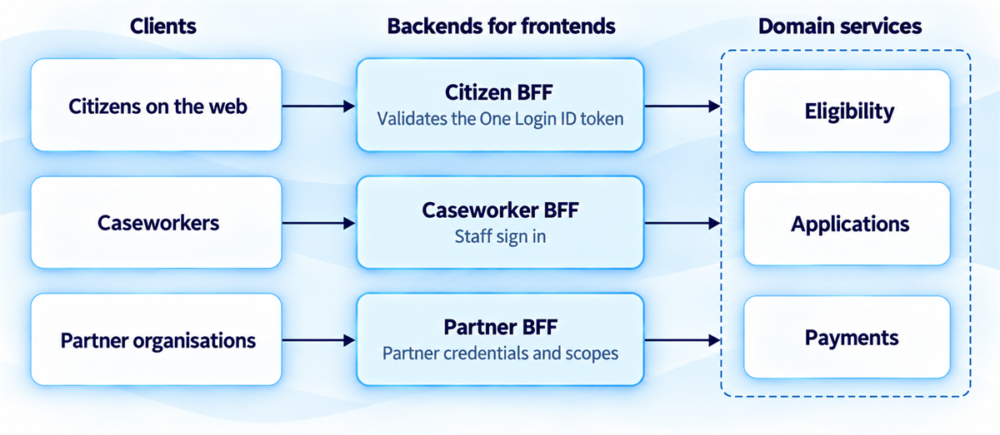
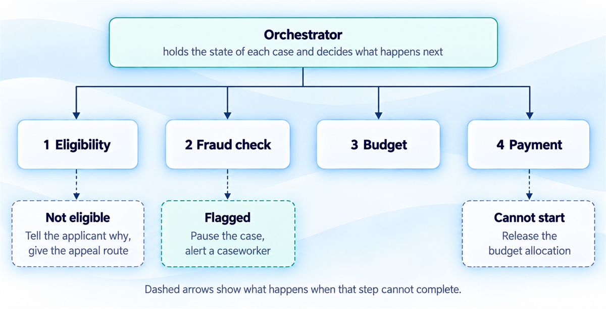
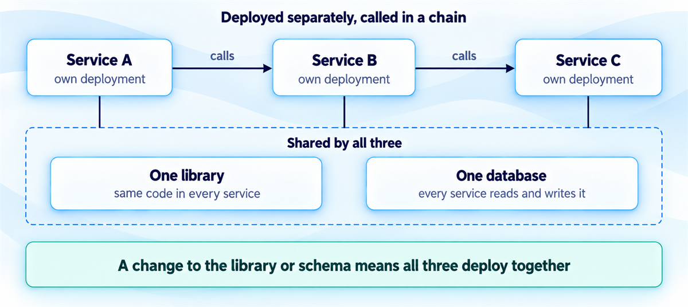

Architecture patterns for scalable government services
A pattern is a known answer to a problem that keeps coming back, and it comes with a cost. Know where each one stops paying for itself.
You'll come away with:
- How to choose between a monolith, a modular monolith and microservices for the team and load you have
- When events, backends for frontends and sagas earn their extra moving parts
- How to build human decision points and appeal routes into a multi service process
- Five patterns that cost more than they return, and a test that catches them
A pattern is a known answer to a problem that keeps coming back, and it comes with a cost. Government services run from a grant scheme taking, say, 100 applications a week to platforms carrying a department's whole public offer, so a pattern that suits one can sink the other. This guide covers the ones you are likely to meet and the point where each stops paying for itself.
Size the problem first
HMRC's figures for the 2024 to 2025 tax year show 475,722 people waiting until the final day, 31 January, to file a Self Assessment return. The busiest hour, 17:00 to 17:59, saw 32,982 returns, about nine a second. Returns are not requests, so real traffic is higher, but it is a useful number to hold against your own.
A scheme taking, say, 100 applications a week needs nothing like that. The Technology Code of Practice will not choose for you. Neither it nor its point 9 mentions microservices, monoliths or event driven design, and point 9 asks that your plans show you have considered how the technology integrates into your organisation. The choice is yours to justify.
Monolith, modular monolith or microservices
A monolith is one deployable unit holding all the functionality, and it deserves better than its reputation. You get one codebase, one pipeline and one monitoring stack. The price is that every change ships everything, and one team can become the bottleneck when several features need to move at once. It suits a single team that owns the lot and has nothing that must scale on its own.

A modular monolith keeps the single deployment but divides the code into modules with explicit boundaries and interfaces, so you can split later if you must. Martin Fowler's 2015 case for starting with a monolith rests partly on boundaries being the hard part: even experienced architects struggle to draw them at the start, and moving functionality between services is much harder than inside a monolith. He adds that most systems pick up too many dependencies between modules to be split sensibly later.
Microservices split the system into independently deployable services that each own their data. They pay off when several teams must release independently, when parts of the system scale at different rates, or when one codebase has outgrown the people maintaining it. They also carry what Fowler calls the microservice premium, the cost of managing a suite of services. A 2019 HMRC blog mentions more than 800 microservices on its Multi-channel Digital Tax Platform. Any given one is likely to depend on several others, so a hack day team graphed which called what.
"We'll build microservices now so we don't have to rebuild later."
Fowler reports that almost all the successful microservice stories he had heard began with a monolith that grew too big, and almost all the systems built as microservices from scratch ended up in serious trouble. That comes from stories he has heard rather than a study, and he says the view is not unanimous. For one team, a modular monolith split along boundaries that have survived real users is the sensible default.
Moving a boundary inside one codebase is a refactor. Moving it between two services is a negotiation.
Four things people mean by event driven
In an event driven design, services publish and consume events, each recording something that happened, such as an application submitted or a payment received. The publisher does not know who is listening, which suits a payment that must trigger a notification, a dashboard update and an analytics feed without the payment service knowing any of them exist. In a 2017 note, Fowler picked out four patterns that go under that name.
Event notification sends a minimal event, such as "application 12345 was submitted", and a consumer that needs more calls back. Coupling stays low, but the wider flow, one reaction triggering the next, is not explicit in any program text, and Fowler notes the only way to see it is often by watching a live system. An event that is really an instruction is what he calls a passive aggressive command. Send a command instead.
Event-carried state transfer puts the data in the event, so consumers keep their own copy and need not call the publisher. Fowler lists the gains as resilience and lower latency, with less query load on the source, and the costs as more data in flight and more state for each receiver to maintain.

Event sourcing stores the events as the primary record and derives current state by replaying them. Fowler's examples are version control, where the commit log is the record, and accounting, where transactions are the record and a balance is derived. You get a strong audit capability and can rebuild any past state, at the price of replay problems, changing event schemas and complexity. CQRS keeps separate models for reading and writing, often paired with events though it does not need them, and Fowler reports that many colleagues are wary of it because it is often misused.
With a timestamp on each event, the stream can form the basis of an audit trail, and with a durable queue a consumer that is briefly down catches up on return. What events take away is immediacy. A caseworker who changes a status and does not see it everywhere at once may assume the system is broken, so agree with policy and operations colleagues what "updated" means in each place before launch. Budget for monitoring event flows too, and for poison messages that no consumer can process.
An event says something happened. A command asks someone to act. Dress one up as the other and the dependency is still there, only hidden.
One backend for each kind of client
A grant service can have citizens on the web, caseworkers on an internal tool and partner organisations calling an API. Microsoft's Azure Architecture Center documents the Backend for Frontend pattern, which it attributes to Sam Newman. Each client type gets its own backend between it and the shared domain services, handling only what is specific to that interface, such as gathering data from several services and shaping it for the client.

The citizen BFF would combine the eligibility check, form data and case status, and return only what a citizen needs. It is also where the citizen sign in is handled: the GOV.UK One Login documentation has the integrating service validate the signature of the ID token it receives. The caseworker BFF validates staff credentials. The partner BFF returns only what the data sharing agreement allows and authenticates partners however the agreement requires, such as mutual TLS.
The cost is more services to build and run. Microsoft expects some code duplication, asks you to keep each BFF to client specific logic with monitoring and authorisation handled as shared concerns, and says the pattern may not suit a service with one client or clients making much the same requests. Decide who owns each BFF before you build it.
Sagas for processes that span services
A grant application might need an eligibility check, a fraud check, a budget allocation and a payment, each in a different service with its own database. A single database transaction cannot wrap them, because traditional guarantees such as ACID do not apply directly across independently managed data stores, as Microsoft's description of the saga pattern explains. A saga swaps that for a sequence of local transactions, where each step that can be undone is paired with a compensating action that runs if a later step fails.
In a choreographed saga each service publishes an event when it finishes and the next one reacts, with no coordinator. That suits simple workflows and gets confusing as steps are added. An orchestrated saga has a central orchestrator that calls each service, stores the state of each case and invokes compensating actions on failure. Microsoft counts the extra coordination logic and a point of failure among its drawbacks, and a better fit for complex workflows among its benefits.
Orchestration fits government work better when a workflow includes a human decision, when audit needs a clear view of where each case stands, or when a failure may need a person to look at it before anything is reversed. Where a step decides or informs a decision about a citizen, the Ethics, Transparency and Accountability Framework for Automated Decision-Making applies and asks for systems that are fully answerable and auditable.

Compensating actions go further than undoing work: they define what happens when a step cannot complete. If payment cannot start, release the budget allocation. If the fraud check flags an application, pause it and alert a caseworker instead of rejecting it. The framework separates decisions made with no human judgement from those where automation assists a person, and says the legal requirements differ. If eligibility fails, tell the applicant why and how to appeal, as the framework's call for clear guidance on challenging a decision suggests. Plan for the step you cannot reverse as well. Microsoft calls it the pivot transaction, and warns that compensating transactions might not always succeed.
When a step fails, the question is what should happen to the citizen next. Undoing the work is only one answer.
Patterns to avoid, or apply with care
Some popular patterns cost more than the problem they solve. Five are worth knowing by name.
The first is microservices for a small team, covered above. A modular monolith gives the same separation without the operating cost.
A shared database between services hides coupling: change the schema and every service that reads it may have to change too. Either those services are really one service, or they need APIs between them.
A distributed monolith has the deployment burden of microservices and the coupling of a monolith, because the services share a database, a library or a chain of synchronous calls. In my experience it tends to appear when a team adopts the structure of microservices without the independence.

Over abstraction wraps components in layers "in case we need to swap this later" when no realistic swap exists. Abstract where change is likely, such as a vendor integration or an external API, and leave alone what will not change, such as your database driver or logging library.
The fifth is premature event sourcing, which is strong where the event history is the requirement, as with a financial ledger or a compliance audit record. Fowler notes it is often useful to build snapshots so you do not replay every event each time. Do not adopt it because it sounds sophisticated.
Every pattern you adopt should solve a problem you can name in your own context. If you cannot say what it solves, you do not need it. Government architecture should be as simple as the problem allows, and no more sophisticated than you can justify to the people paying for it.
This guide is one practitioner's account of architecture patterns for scalable UK government services, not official guidance. The pattern descriptions and the grant service examples are teaching aids; the authoritative sources are linked below.
Last reviewed October 2026 against the sources below. Government policy and the referenced documentation change, so check the source before relying on this.